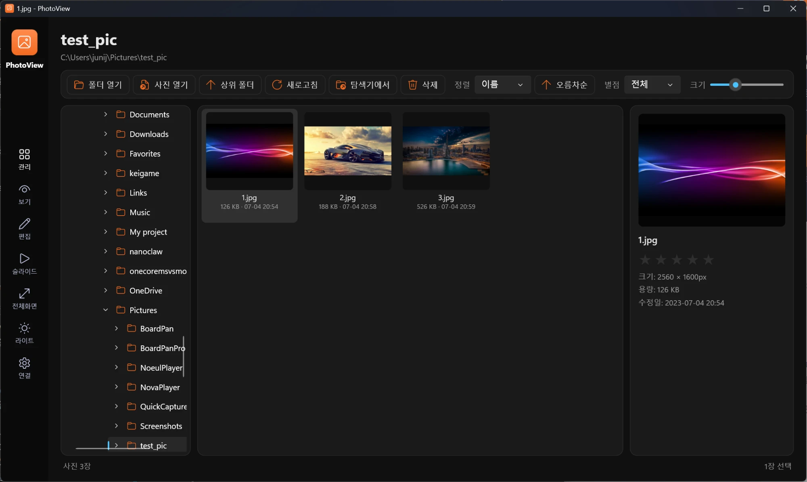
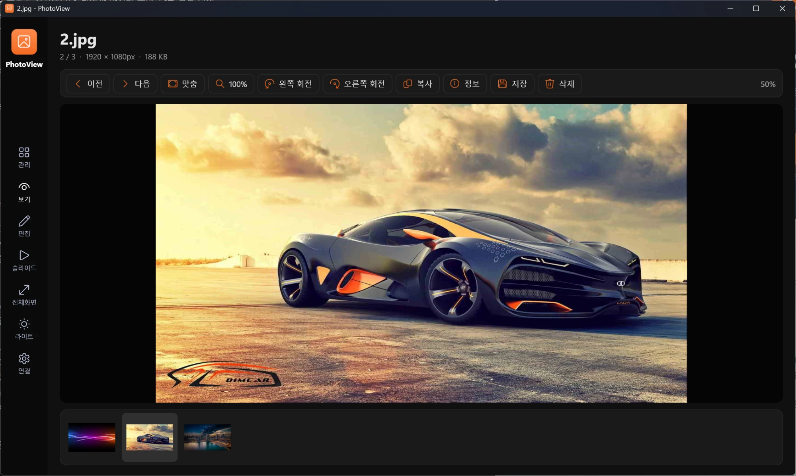

검정 계열 다크 모드 화면입니다. 라이트 모드로도 쓸 수 있습니다.


사이드바에서 모드를 바꾸거나 M V E 키로 전환합니다. 사진을 더블클릭하면 보기, Esc 를 누르면 관리로 돌아옵니다.
왼쪽 폴더 트리, 가운데 썸네일 격자, 오른쪽 미리보기. 수천 장이 있는 폴더도 보이는 줄만 만들어서 가볍게 넘어갑니다. 정렬·별점 필터·썸네일 크기 조절을 지원합니다.
휠로 커서 기준 확대, 드래그로 이동, 더블클릭으로 맞춤↔100%. 앞뒤 사진은 미리 읽어 두어 넘길 때 거의 즉시 나옵니다. 전체화면과 슬라이드쇼도 됩니다.
선·사각형·펜·화살표·글자·모자이크·블러, 자르기, 크기 조절, 회전·반전, 밝기·대비·흑백. 되돌리기는 언제든 Ctrl+Z.
군더더기 없이, 자주 쓰는 것 위주로 담았습니다.
탐색기에서 사진을 더블클릭하면 이 프로그램으로 열립니다. 이미 켜져 있으면 새 창을 띄우지 않고 그 창에서 엽니다.
1~5점을 주고(1~5) 별점 이상만 걸러 볼 수 있습니다. 여러 장을 선택해 한 번에 줄 수도 있습니다.
크기·용량·촬영일·카메라·조리개·셔터·ISO·초점거리를 보여 줍니다. 휴대폰 사진의 회전도 자동으로 맞춥니다.
그린 도형은 사진 위의 개체라서 선택해서 옮기거나 지울 수 있습니다. 회전·저장 등을 하면 사진에 합쳐집니다.
덮어쓰기 확인, 다른 이름으로 저장(PNG·JPG·BMP·TIFF), 클립보드 복사, 그림판에서 열기. 삭제는 휴지통으로 갑니다.
눈이 편한 검정 계열 다크 모드를 지원하고, 선택은 기억합니다.
| 키 | 동작 |
|---|---|
| M / V / E | 관리 / 보기 / 편집 모드 |
| ← → | 이전·다음 사진 (관리 모드에서는 격자 이동, ↑ ↓ 는 줄 이동) |
| Enter | 관리: 선택한 사진 열기 / 보기: 전체화면 / 자르기 중: 적용 |
| F · 1 · + − | 화면 맞춤 · 100% · 확대/축소 |
| R / Shift+R | 오른쪽 / 왼쪽 회전 |
| F5 | 슬라이드쇼 (관리 모드에서는 새로고침) |
| Ctrl+O · S · Shift+S | 열기 · 저장 · 다른 이름으로 저장 |
| Ctrl+Z · C | 되돌리기 · 복사 (그린 도형 포함) |
| Delete | 사진을 휴지통으로 (개체를 선택했다면 그 개체 삭제) |
| 1~5 / Ctrl+1~5 | 별점 (관리 모드 / 보기·편집 모드) |
| Shift + 선 드래그 | 가로/세로 직선으로 고정 |
| Esc | 선택·도구·자르기 해제 → 마지막엔 관리 모드로 |
PhotoView.msi 를 내려받아 실행하면 됩니다.
현재 사용자 전용으로 설치됩니다.
런타임이 함께 들어 있어 별도로 설치할 것이 없습니다.
새 설치 파일을 실행하면 기존 버전이 자동으로 교체됩니다.
서명되지 않은 설치 파일이라 처음 실행할 때 Windows SmartScreen 경고가 나올 수 있습니다. WebP·HEIC 같은 형식은 윈도우에 해당 코덱(Microsoft Store의 이미지 확장)이 있어야 열립니다.